Chapter 9. 통제집단합성법#
통제집단합성법#
작성자 : 최의관
→ 패널데이터 평행 추세 가정을 불만족 할 경우, 가중치를 이용해 실험군과 유사한 가상의 대조군(synthetic control) 생성해 처치 이후의 추세를 예측하는 방법
통제집단합성법과 공변량#
실험군과 유사한 가상의 대조군 생성시, 공변량을 추가할 수 있음 추가 공변량과 y의 척도가 다른 경우도 존재, 척도인자 v (scaling factor) 필요
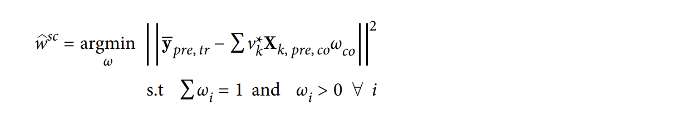
제약조건: 각 공변량의 가중치의 합은 1, 가중치는 양수
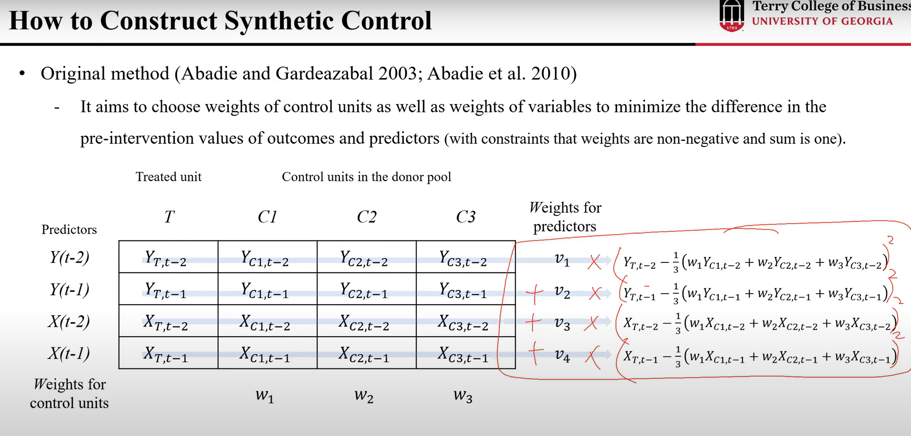
출처: 인과추론의 데이터과학(유튜브) - 박지용교수님
책에서는 공변량으로 주요 경쟁사의 일별 다운로드 수를 시장 규모에 따라 정규화한 값(comp_download_pct)을 공변량으로 사용
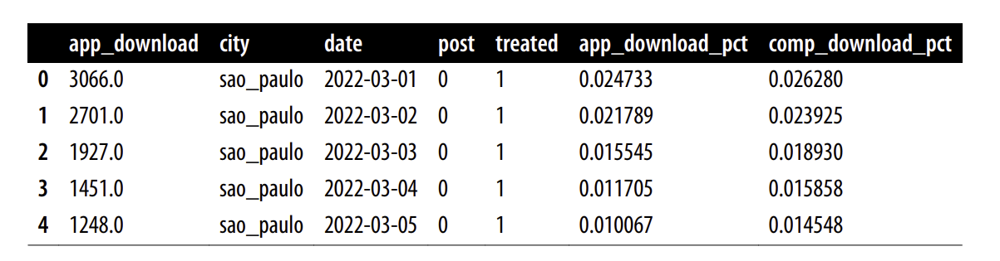
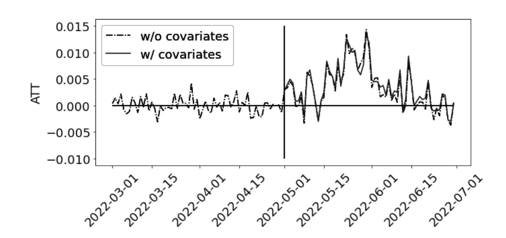
위의 통제집단합성법 예시는 공변량 추가는 임팩트가 없고, 처치 이전의 대조군 Y의 값으로 충분히 예측 가능함을 뜻함
통제집단합성법과 편향 제거#
처치 이전에 대조군을 사용할 때 처치 이전의 기간이 짧다면 과적합이 발생될 수 있음 (편향 발생 → 즉, 일반화 능력이 떨어짐)
해결 방법으로는 교차 예측 (cross-fitting) 방법이 있다.
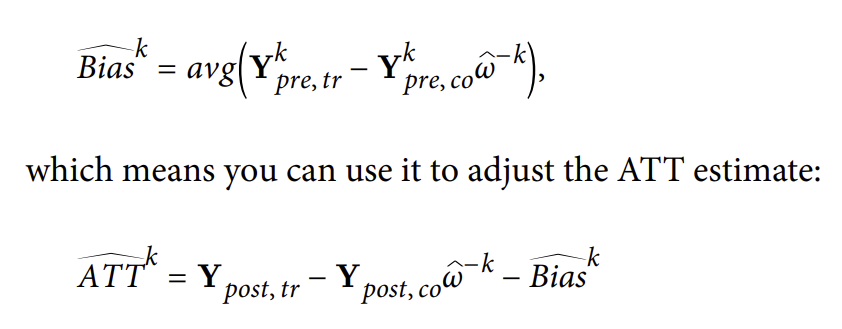
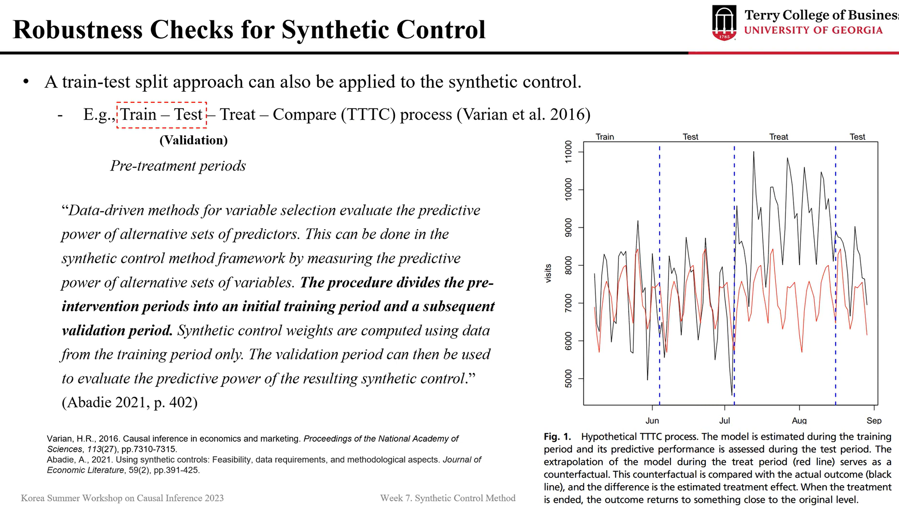
출처: 인과추론의 데이터과학(유튜브) - 박지용교수님
→ 결국, 편향은 특정 K 구간을 제외한 나머지 시점의 데이터들을 사용해 가중치를 구하고, 구한 가중치를 이용해 K 구간의 대조군과 실험군의 차이의 평균을 Bias로 계산. 구한 Bias는 ATT 계산시 보정효과로 작용됨. 이후 ATT를 K개 구할 수 있고, 평균 ATT를 구할 수 있다.
합성 이중차분법#
가상의 대조군 (Synthetic Control) 을 생성하고, 이를 이중차분법에서 대조군으로 사용
이중차분법(Difference-in-difference)?
평행 추세 가정: 처치가 없었다면 평균적으로 대조군과 실험군의 추세는 평행할 것이다.
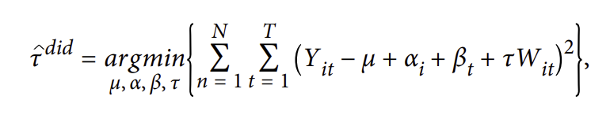
tau는 관심 있는 ATT, alpha는 대상 고정효과, beta는 시간 고정효과를 뜻함
대상 고정효과는 실험 대상의 절편 차이, 시간 고정효과는 실험군과 대조군 모두에게 걸친 일반적인 추세를 나타냄
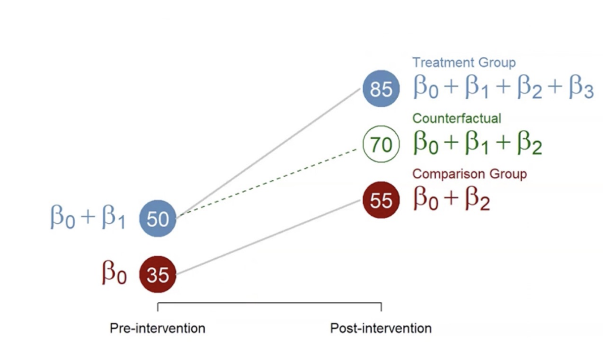
출처: 인과추론의 데이터과학(유튜브)
정리하면, 대조군의 추세를 이용하여 처치 이전 실험군의 처치 이후의 잠재적 결과를 도출하고, 실제 처치결과와 차이를 통해 ATT를 구함
결론적으로, 합성 이중차분법은 통제집단합성법에 시간 고정효과인 Beta를 변수로 추가하는 형태
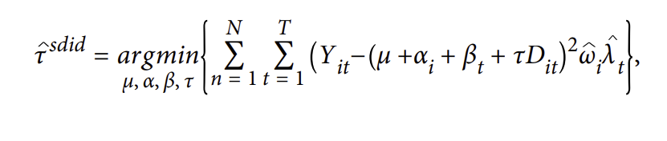
람다는 시간 가중치를 뜻하고, 위 식은 통제집단합성법과 이중차분법의 요소를 모두 포함하고 있음.
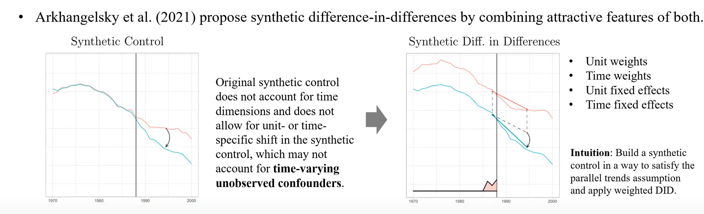
출처: 인과추론의 데이터과학(유튜브) - 박지용교수님
→ Parallel trend가 성립하는 synthetic control을 생성할 수 있음
→ 즉, 추정량에 대한 통제집단합성법 구성 요소는 이중차분법의 평행 추세 가정을 더 설득력 있게 만듬
→ 합성 이중차분법은 각각의 두 방법보다 분산이 더 낮은 경향이 있음
→ 하지만, 변수를 추가함으로써, 외삽을 통해 편향이 발생할 수 있음을 주의
요약#
이 장에서는 처치 시점 이후의 실험군이 처치를 받지 않았을 경우의 결과, 즉 잠재적 결과를 추정하는데 있어서 모델 기반 접근법인 통제집단합성법을 배움
처치이전 대조군 활용을 통해 처치군과 유사한 가상의 대조군(Synthetic Control) 생성
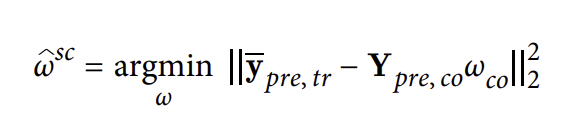
가상의 대조군을 활용해 처치 이후 예측 모델링 생성하여 실제 처치군과의 차이 비교 (ATT)
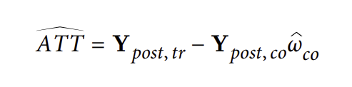
Synthetic Control 제약조건: 가중치는 합이 1이며, 가중치는 양수다
APPENDIX#
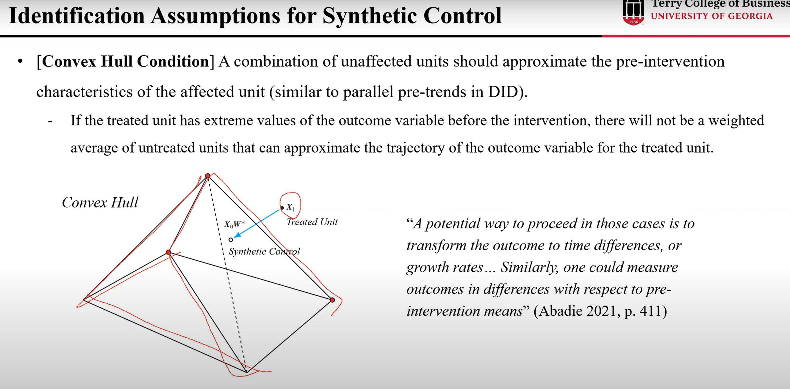
출처: 인과추론의 데이터과학(유튜브) - 박지용교수님
통제집단합성법 가정
통제집단합성법에서의 가정은 Convex Hull Condition이 있다.
처치 이전에 Treated Unit이 극단값을 갖게 되면, 처치 이전의 가중평균으로는 처치된 집단의 결과 변수 추세를 근사할 수 없다 → Normalization 해서 해결 가능
(Control Unit들의 Interpolation 만 가지고 Synthetic control 을 구성)
Extrapolation을 허용하면 fitting은 높아질 수 있어도 편향이 발생 (Overfitting 문제 발생, interpretability 떨어짐)
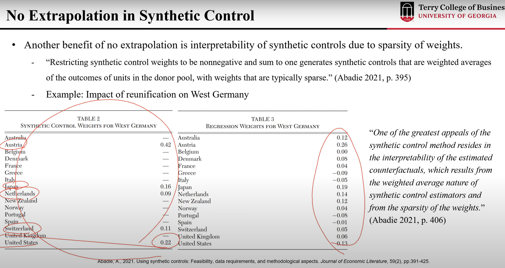
출처: 인과추론의 데이터과학(유튜브) - 박지용교수님 (왼쪽: Extrapolation 허용 X, 오른쪽 extrapolation 허용 O)
→ Constraint 중 하나인 가중치 양수조건을 적용 안하면, Donor Pool의 weight이 음수가 발생하는데, 이는 Interpretability가 떨어짐